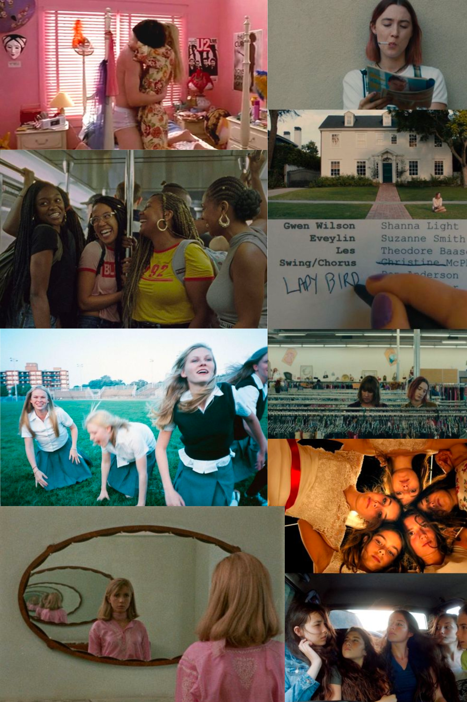

coming of age in film
for teenagers growing up, coming of age films are a form of finding a voice. it shows stories of the impossible. for queer folks, it can show a life that was missed. film critic zoe rose bryant mentions how films such as are you there god? it's me margaret and ladybird presents a comfort to someone who transitioned very later on in their life. it showed the wonders of sexuality, friendships and growing pains.